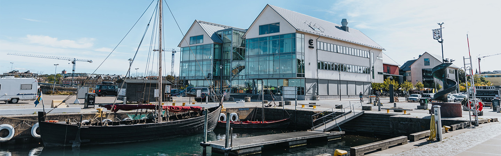

Campus Varberg är en modern och innovativ utbildningsinstitution belägen på Sveriges västkust. Skolan erbjuder både högskole- och yrkeshögskoleutbildningar i samarbete med ledande universitet och näringsliv, vilket gör den till en av landets mest attraktiva utbildningsmiljöer. Varje år studerar omkring 1 500 studenter vid Campus Varberg, inom områden som teknik, IT, hållbar energi, sjöfart, vård och ekonomi.